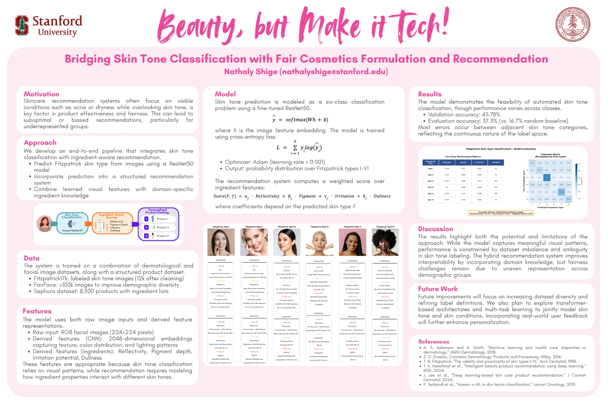

Stanford CS 129 · Course project under Andrew Ng
Bridging skin tone classification with fair cosmetics recommendation.
Skincare recommenders usually rank products by visible concerns like acne or dryness and leave skin tone out, so the same product can be recommended to someone it will leave with a white cast. I built a pipeline that predicts Fitzpatrick skin type from a photo with a fine-tuned ResNet50, then ranks about 8,500 Sephora products with an ingredient scoring system weighted for that skin type.
- 37.3%six-class evaluation accuracy, against a 16.7% random baseline
- 45.8%validation accuracy
- 8,500Sephora products scored by ingredient
- 100K+FairFace images added for demographic diversity
Problem
Skin tone changes how a product behaves on skin. Mineral filters and reflective particles can leave a white cast on deeper skin, and some actives raise the risk of post-inflammatory hyperpigmentation. Yet most AI skincare tools classify conditions or ask for a predefined skin type, and never model tone.
Dermatology models also tend to perform worse on skin they rarely saw in training. Adamson and Smith (JAMA Dermatology, 2018) trace this to datasets drawn mostly from lighter skin, which is why this project treats fairness as part of the problem from the first dataset onward.
Approach
Recent work splits into clinical skin analysis with deep learning and AI product recommenders that classify conditions before suggesting products (Lee et al., 2024; Hanchinal et al., 2024). Few combine the two, and fewer model how ingredients interact with different skin. This project joins them: a learned skin tone prediction feeds a structured, interpretable ranking built on cosmetic chemistry (Draelos, 2016).
How it works
Seven steps, from a photo to a ranked shelf. Step through them, or let the first one play.
Data
- 12,222Fitzpatrick17k images after cleaning, split 70 / 10 / 20 into train, validation and test
- 100K+FairFace faces, mapped to Fitzpatrick types with a heuristic from the labels FairFace provides
- 75 / 25FairFace to Fitzpatrick17k in each training batch, trading diversity against label accuracy
- 224 × 224input size, normalized with ImageNet statistics
- 1,500images per epoch, sampled by class to temper imbalance
- 8,500Sephora products from Kaggle, each with its ingredient list
Augmentation: horizontal flips, rotations, and color jitter on brightness, contrast, saturation and hue.
Model and ranking
ResNet50, fine-tuned end to end
Each image becomes a 2,048-number feature vector capturing texture, color distribution and lighting. A linear layer and a softmax give a probability for each of the six types. Training used cross-entropy, Adam at a learning rate of 0.001, learning rate scheduling, and early stopping.
Ingredient compatibility, by skin type
Each ingredient adds to four dimensions: reflectivity, pigment depth, irritation potential and dullness, weighted by its position in the list. Type-specific multipliers then reweight each dimension, so reflectivity counts more on deeper skin. Lower scores are better.
ŷ = softmax(W h + b)
Concern(P) = Σj wj · cj
Score(P, f) = αf · Reflectivity + βf · Pigment + γf · Irritation + δf · Dullness
Results
The classifier reached 45.8% validation and 37.3% evaluation accuracy on six classes, where chance is 16.7%. Most errors fall between neighboring types, which reflects how continuous skin tone really is. Accuracy held steady across gender but ranged from 38% to 52% across ethnic groups, so dataset composition still shaped the model.
On the recommendation side, the scoring produced compatibility scores for over 70% of products, enough to filter and rank the shelf for each predicted type.
| Type | Precision | Recall | F1 | Images |
|---|---|---|---|---|
| Type I | 0.168 | 0.250 | 0.201 | 64 |
| Type II | 0.247 | 0.282 | 0.263 | 78 |
| Type III | 0.441 | 0.669 | 0.531 | 284 |
| Type IV | 0.500 | 0.099 | 0.165 | 294 |
| Type V | 0.336 | 0.460 | 0.388 | 202 |
| Type VI | 0.477 | 0.292 | 0.362 | 72 |
Overall accuracy 37.3%, macro F1 0.319, weighted F1 0.339.
Recommendations by skin type
The same shelf, ranked for each type. Pick a type to see the best, middle and weakest foundation and sunscreen from the project's results.
What I learned
Labels set the ceiling.
Fitzpatrick types sit on a continuous spectrum, and the labels are subjective, so adjacent types blur. Better architectures matter less than clearer label definitions and more balanced data.
Domain knowledge makes it explainable.
A hybrid of learned features and ingredient chemistry gives a reason behind every ranking, which a purely data-driven recommender cannot.
Fairness has to be measured.
Adding FairFace improved diversity, yet accuracy still varied by 14 points across ethnic groups. Reporting it by group is what made the gap visible.
Next steps.
Vision transformers, multi-task learning across skin tone and skin conditions, a larger ingredient database validated with dermatologists, and user feedback to personalize further.
Poster

Next project